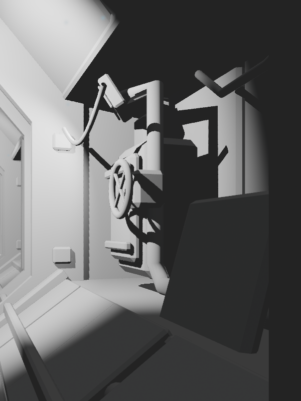
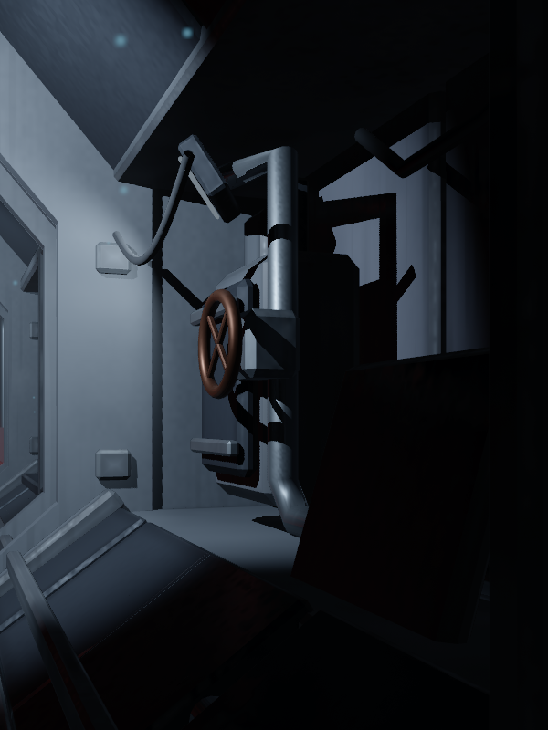
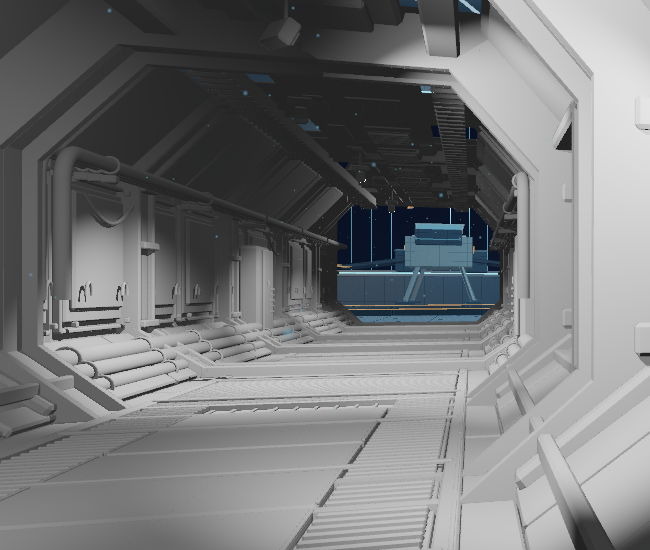
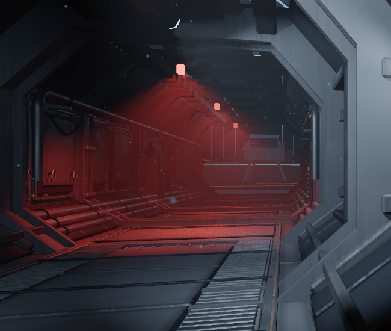
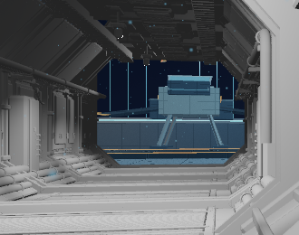
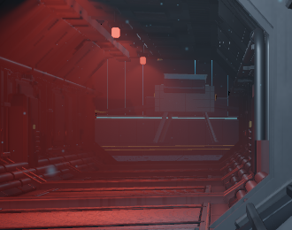

ECHO-9 —4A: plany przestrzeni
Bliski plan — rama i wnęka serwisowa
Te same piksele[730,80,1330,880], bez skalowania i retuszu.
Neutralny materiał diagnostyczny
Obecne materiały i światło
Środkowy plan — kolejne warstwy konstrukcji
Te same piksele[200,250,850,800], bez skalowania i retuszu.
Neutralny materiał diagnostyczny
Obecne materiały i światło
Daleki plan — rzeczywiste przejście
Te same piksele[430,390,760,650]. Tło pozostałych sektorów pozostaje zachowane; neutralny render nie przykrywa go mgłą.
Neutralny materiał diagnostyczny
Obecne materiały i światło